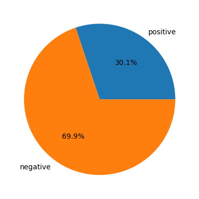

- Initial Examination of Data
- Missing Values
- Distribution of Independent Variables
- Associations Between Features
- The Use of the Mutual Information Coefficient
Initial Examination of Data
First, I will look at the number of rows (which are by design, so I actually already know), and the distribution of the categories.
# get the length of the data frame
nrows = len(data)
# number and proportion for target=1
ntarget1 = data['target'].sum()
ptarget1 = ntarget1/nrows
# number and proportion for target=0
ntarget0 = nrows-ntarget1
ptarget0 = 1-ptarget1
# present results
print(f"The total number of rows is {nrows:,d}. Of those, {ntarget1:,d} are positive, {ntarget0:,d} are negative."+
f"\nThe proportion of positive cases is {ptarget1:.03} and negative cases is {ptarget0:.03}.")
# pie chart
fig,ax = plt.subplots()
ax.pie(x=[ptarget1,ptarget0],labels=['positive','negative'],autopct='%1.1f%%');
plt.show()The total number of rows is 50,000. Of those, 15,073 are positive, 34,927 are negative.
The proportion of positive cases is 0.301 and negative cases is 0.699.

Missing Values
I also want to see how many missing values there are.
# this loop will print the name of any column with a nonzero sum of missing values along with the number of missing values
no_missing_flag = True
for colname in data.columns:
n_nans = data[colname].isna().sum()
if n_nans > 0:
print(f"{colname} has {n_nans} missing values.")
no_missing_flag = False
if no_missing_flag:
print("There are no missing values.")There are no missing values.
Because this is a synthetic dataset, there are no missing values. Were there missing values, I would then need further analysis to determine whether to drop rows or columns with missing data or try some method of imputation (which will be demonstrated in a future addition to this portfolio).
Distribution of Independent Variables
These data are all numerical, so to get a look at the distributions of feature values I will simply use the describe method. On a real dataset I would use domain knowledge to take a closer look at features I think might be relevant.
data.describe()| X0 | X1 | X2 | X3 | X4 | X5 | X6 | X7 | X8 | X9 | ... | X21 | X22 | X23 | X24 | X25 | X26 | X27 | X28 | X29 | target | |
|---|---|---|---|---|---|---|---|---|---|---|---|---|---|---|---|---|---|---|---|---|---|
| count | 50000.000000 | 50000.000000 | 50000.000000 | 50000.000000 | 50000.000000 | 50000.000000 | 50000.000000 | 50000.000000 | 50000.000000 | 50000.000000 | ... | 50000.000000 | 50000.000000 | 50000.000000 | 50000.000000 | 50000.000000 | 50000.000000 | 50000.000000 | 50000.000000 | 50000.000000 | 50000.000000 |
| mean | -0.009305 | 0.385435 | 0.402292 | 0.067548 | -2.437292 | -0.374888 | 4.402445 | 0.984402 | -0.407140 | -0.400710 | ... | -0.992325 | 1.010425 | -0.416586 | 0.388522 | 0.380183 | -0.995731 | 0.386466 | -0.001563 | 1.014605 | 0.301460 |
| std | 1.001876 | 2.877833 | 2.704703 | 7.284647 | 6.166970 | 2.724958 | 7.715400 | 2.475133 | 2.543759 | 2.350943 | ... | 2.801943 | 2.810665 | 2.779655 | 2.893455 | 2.792027 | 2.425633 | 2.725618 | 0.995862 | 2.523641 | 0.458897 |
| min | -4.309958 | -12.576973 | -10.434212 | -27.566633 | -26.646586 | -10.982415 | -25.189695 | -8.883930 | -13.818169 | -9.206762 | ... | -12.265536 | -10.008664 | -12.440082 | -12.672520 | -11.012225 | -14.302898 | -10.511940 | -4.034314 | -9.444280 | 0.000000 |
| 25% | -0.685982 | -1.538148 | -1.450334 | -4.871029 | -6.573651 | -2.206324 | -0.901286 | -0.677715 | -2.133717 | -2.012085 | ... | -2.876197 | -0.866984 | -2.296212 | -1.581324 | -1.515726 | -2.625107 | -1.454356 | -0.673433 | -0.680536 | 0.000000 |
| 50% | -0.010349 | 0.395964 | 0.360203 | -0.296250 | -2.434660 | -0.377266 | 4.297483 | 0.991522 | -0.391489 | -0.488600 | ... | -0.991356 | 1.002126 | -0.406314 | 0.390705 | 0.378676 | -0.985660 | 0.403399 | 0.000029 | 1.016488 | 0.000000 |
| 75% | 0.671657 | 2.341213 | 2.220133 | 4.671136 | 1.714638 | 1.451967 | 9.611936 | 2.639159 | 1.313721 | 1.122236 | ... | 0.878624 | 2.898819 | 1.486461 | 2.356106 | 2.277618 | 0.622938 | 2.236307 | 0.669239 | 2.713905 | 1.000000 |
| max | 4.014015 | 11.043349 | 12.134694 | 34.839229 | 23.487909 | 11.338587 | 40.424541 | 11.305053 | 10.613916 | 10.470961 | ... | 10.353978 | 12.980623 | 11.112211 | 13.285860 | 12.423742 | 10.259914 | 12.033986 | 4.152785 | 11.962137 | 1.000000 |
8 rows × 31 columns
Associations Between Features
Next I want to take a quick look at associations. While this might commonly be done with Pearson’s correlation coefficient, I prefer to use the Spearman. Pearson’s assumes a linear relationship, and thus can fail to reflect robust nonlinear associations. That is, there might be a very good nonlinear association, but Pearson’s coefficient would show a weaker one. By using rank, Spearman only considers the mutual monotonicity of the variables.
I will begin by looking only at the features.
# set up the figures
fg, ax = plt.subplots(1,1,figsize=(10,10))
# create a correlation matrix
corr_matrix = data.iloc[:,:-1].corr(method='spearman')
# create a heatmap
ax = sns.heatmap(np.abs(corr_matrix))
plt.show()We see some higher correlations between features (e.g., X13 and X16), as well as completely uncorrelated features (which was by design). One option we could now use is to try linear combinations of those highly correlated features. However, this should be handled by our feature selection methods below.
The Use of the Mutual Information Coefficient
I would like more information than Spearman can provide for measuring the association between the features and the target variable. For that, I like the mutual information coefficient. That particular measure I found from An Undeservedly Forgotten Correlation Coefficient on Towards Data Science. In short, the mutual information is the relative entropy between the joint distributions of two variables and the product of their marginal distributions. That is, for probability defined over variables and with values and respectively with joint probability and marginal probabilities and :
This is scaled to be between on the interval through:
This is the mutual information coefficient (MIC), and it is significantly more informative than either Pearson or Spearman. We can regard it as telling us how much information we get about one variable when we know the other variable. An example of its utility in the above article uses a plot that is a ring in the plane. There clearly is a strong relationship between the and variables, but traditional correlation coefficients show virtually no relationship. The MIC, on the other hand, reflects the actual strong association. Note it does take some time to compute, so it is not efficient to use on a large data set. I will use it to look at relationships between the features and the target variable, to get an initial idea of the effect size from each individual feature.
# compute the mutual information coefficient
MI = mutual_info_regression(data.iloc[:,:-1],data['target'])
R = np.sqrt(1-np.exp(-2*MI))
# create a quick dataframe fro ease of plotting
df_R = pd.DataFrame({'feature':data.columns[:-1],'MIC':R}).sort_values('MIC')
# make a plot
fg, ax = plt.subplots(1,1,figsize=(10,10));
ax.barh(y = df_R['feature'], width = df_R['MIC']);
ax.set_title("Mutual Information Coefficients of Features and Target");
ax.set_xlabel("Mutual Information Coefficient");
ax.set_ylabel("Feature");

We see a number of features that are completely uncorrelated, so we can safely drop those.
data.drop(columns = df_R.loc[df_R['MIC']==0,'feature'], inplace = True)